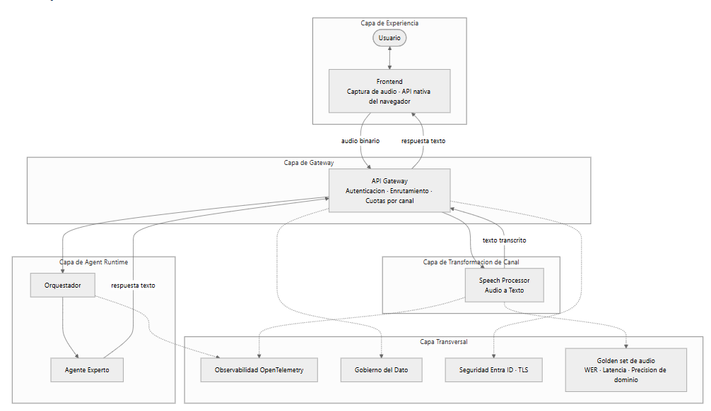
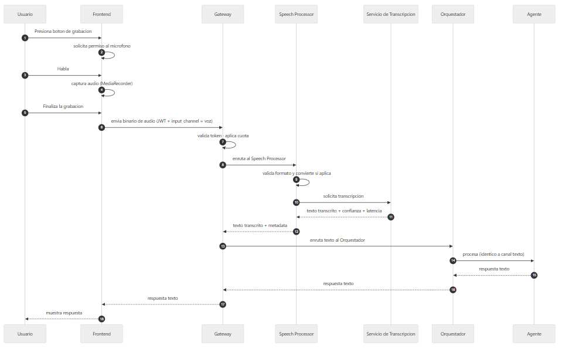

Documento | Relación |
|---|---|
Arquitectura de Referencia Multimodal V1.0 | Diseño general del que este documento es una especialización para el canal de voz |
Arquitectura de Referencia Multiagente V1.0 | Diseño de coordinación entre agentes sobre el mismo Agent Runtime. |
Tabla de contenido
Esta arquitectura de referencia habilita agentes conversacionales por voz sobre la plataforma del proyecto. Define cómo se captura el audio, cómo se convierte a texto, cómo el agente lo procesa y cómo la respuesta llega al usuario. Constituye una especialización de la arquitectura multimodal para el canal de voz.
El principio arquitectónico es el mismo: la voz se transforma a texto antes de llegar al agente. El agente no requiere lógica específica para voz; recibe siempre texto.
La incorporación del canal se resuelve agregando la captura de audio en el frontend y el Speech Processor detrás del gateway. Los componentes de gateway, Agent Runtime, observabilidad y seguridad se preservan sin modificación estructural.
Captura de audio en el frontend.
Speech-to-Text para conversión a texto.
Procesamiento por parte del agente.
Respuesta al usuario en texto.
Integración con plataformas corporativas donde aplique.
Gobierno y restricciones de uso.
Respuesta del agente en voz sintetizada (Text-to-Speech). Se contempla como evolución posterior.
Streaming de audio en tiempo real.
Reconocimiento de voz en múltiples idiomas simultáneos.
Análisis prosódico o emocional del audio.
Normalización del input en la capa de experiencia.
La conversión de audio a texto ocurre antes de llegar al agente. El agente recibe siempre texto y no conoce que el input original provino de voz.
Este principio garantiza que el agente no cambia por incorporar el canal de voz, y que cualquier ajuste al proveedor de transcripción se resuelve en el Speech Processor sin impactar el resto de la arquitectura.
Capa | Responsabilidad |
|---|---|
Capa de Experiencia | Captura del audio del usuario en el frontend |
Capa de Gateway | Autenticación, enrutamiento y cuotas. Punto único de entrada |
Capa de Transformación de Canal | Conversión de audio a texto detrás del gateway |
Capa de Agent Runtime | Procesamiento del texto por el agente |
Capa Transversal | Observabilidad, gobierno del dato, seguridad y calidad |

Componente en el frontend responsable de grabar el audio del usuario usando la API nativa MediaRecorder del navegador.
Responsabilidades:
Solicitar permiso al micrófono.
Grabar el audio en formato soportado por el navegador.
Enviar el blob de audio al gateway al finalizar la grabación.
No requiere librerías externas. Funciona en navegadores modernos con permisos otorgados.
Componente backend responsable de transcribir el audio a texto. Se ubica detrás del gateway como componente independiente.
Responsabilidades:
Recibir el binario de audio desde el gateway.
Validar el formato de audio y aplicar conversión previa si el servicio de transcripción lo requiere (ver sección 7.2).
Invocar el servicio de transcripción seleccionado.
Retornar el texto transcrito junto con metadata: confianza, latencia y proveedor.
Encapsular el detalle del proveedor de transcripción.
Esta ubicación aísla la capacidad del ciclo de vida del agente y permite su reutilización por otros clientes, como Teams, aplicaciones móviles o el canal telefónico.
Punto único de entrada al backend. Sus responsabilidades para el canal de voz son:
Validar el token JWT emitido por Entra ID.
Aplicar cuotas por canal, considerando que la voz consume más tokens que el texto directo.
Enrutar el flujo de audio hacia el Speech Processor.
Enrutar el texto transcrito hacia el Agent Runtime.
Enrutar la respuesta del agente de vuelta al frontend.
Propagar la identidad del usuario en cada request hacia el Speech Processor y el agente.
Recibe siempre texto y no conoce que el input proviene de voz. La modalidad se registra en la metadata de la traza.

La respuesta del agente regresa al usuario a través del mismo gateway. El frontend no invoca al agente por separado: el gateway consolida el ciclo transcripción → procesamiento → respuesta.
Stack aprobado para el canal de voz.
Componente | Tecnología habilitada |
|---|---|
Captura de audio | Angular con API |
Speech Processor | Componente backend en el runtime del proyecto |
Servicio de transcripción | Ver sección 7.1 |
Gateway | Azure APIM |
Agent Runtime | Python + LangGraph |
LLM Gateway | LLM Gateway del proyecto |
Observabilidad | OpenTelemetry con Dynatrace |
Seguridad | Microsoft Entra ID con JWT |
Almacenamiento, si aplica | Azure Blob Storage con clasificación heredada |
Opción | Descripción | Consideraciones |
|---|---|---|
A. STT dedicado | Servicio administrado como Azure Speech Service. Soporte nativo para español latinoamericano. Custom Speech para vocabulario del dominio. | Requiere provisionamiento. Facturación separada. Máxima madurez para producción escalada. |
B. Whisper vía LLM Gateway | Reutiliza el gateway de modelos ya establecido. Facturación consolidada con el resto de invocaciones al LLM. | Latencia mayor que STT dedicado. Sin Custom Speech. |
C. Modelo multimodal nativo | Procesa audio y texto en el mismo request. Elimina el paso separado de transcripción. | Disponibilidad regional variable. Sin transcripción intermedia auditable. |
La selección se determina con criterios objetivos: latencia end-to-end, costo por minuto, precisión sobre términos del dominio validada con golden set, cumplimiento con gobierno del dato y ciberseguridad, y consistencia con el stack de la plataforma.
La arquitectura absorbe cualquiera de las tres opciones sin cambios estructurales, dado que el Speech Processor encapsula al proveedor.
El navegador con MediaRecorder produce formatos que varían entre navegadores.
Navegador | Formato por defecto |
|---|---|
Chrome, Edge, Firefox | WebM con codec Opus |
Safari en iOS y macOS | MP4 con codec AAC |
El Speech Processor debe cumplir una de las dos condiciones:
Soportar directamente los formatos generados por los navegadores objetivo.
Realizar conversión previa al formato requerido por el servicio de transcripción. WAV a 16 kHz mono es el formato más ampliamente compatible entre proveedores.
Este diseño delega la responsabilidad al Speech Processor y no la expone al frontend ni al agente. Si el proveedor seleccionado no soporta directamente WebM o MP4, la conversión se ejecuta como paso previo dentro del componente.
El canal de voz puede integrarse con plataformas corporativas existentes en la organización cuando aplique.
Plataforma | Modo de integración | Consideración |
|---|---|---|
Microsoft Teams (Bot Service) | El bot captura el audio del canal de Teams y lo envía al Speech Processor a través del gateway | Requiere provisionamiento del Bot Service y registro en Entra ID |
Aplicación móvil corporativa | Uso de SDK del proveedor STT en el dispositivo, o envío del audio al backend | Depende de las capacidades del stack móvil |
Canal telefónico (IVR) | Integración con el gateway telefónico corporativo. El audio se transmite al Speech Processor | Requiere validación de latencia adicional y calidad del audio |
SPA web propia | Captura con | Escenario base del diseño |
En todos los casos el Speech Processor centraliza la transcripción. Las plataformas corporativas son consumidores del mismo componente backend.
Elemento | Tratamiento |
|---|---|
Transcripción | Hereda la clasificación de la evaluación a la que pertenece |
Binario de audio | Por defecto no se persiste. Si el negocio o la regulación exigen auditoría del audio original, aplica el modelo de gobierno de archivos del proyecto con clasificación, ACL heredada y política de retención |
Retención mínima operativa | El binario se conserva solo durante el procesamiento y un período corto adicional para auditar el evento en caso de disputa |
Transmisión del audio siempre por TLS.
La autenticación por Entra ID con JWT aplica igual al canal de voz que al canal de texto.
El texto transcrito pasa por sanitización previa al contexto del modelo, como protección contra prompt injection.
El acceso al binario de audio se limita al Speech Processor mediante identidad administrada.
El agente responde en texto. La respuesta por voz no está en alcance de este diseño.
La transcripción se ejecuta por lote al finalizar la grabación. No hay streaming en tiempo real.
El diseño contempla un idioma por sesión, con español latinoamericano como configuración inicial.
La calidad de la transcripción depende del entorno del usuario: micrófono y ruido ambiente.
Los canales que consumen más tokens tienen cuotas específicas por usuario y por sesión.
No se admite audio con contenido que pertenezca a categorías de datos restringidos definidas por el equipo de gobierno del dato.
Escenarios de accesibilidad donde la escritura no es la modalidad preferente para el usuario.
Tareas de campo donde el usuario tiene las manos ocupadas y necesita interactuar con el agente por voz.
Reducción de fricción en flujos repetitivos donde escribir contexto extenso resulta costoso.
Integración con canales corporativos como Teams para consultas rápidas al agente.
Escenarios donde se requiere registrar y analizar el contenido de reuniones o entrevistas cortas.
Procesos batch sin intervención humana en el punto de entrada.
Escenarios con volumen que exija streaming en tiempo real.
Casos que exigen respuesta del agente en voz sintetizada.
Contextos con ruido ambiente extremo donde la calidad de transcripción cae por debajo del umbral operativo.
Escenarios con requisitos regulatorios de biometría de voz, no cubiertos por este diseño.
La calidad se evalúa siguiendo la metodología de gobierno de evals del proyecto.
Componente de la evaluación | Definición |
|---|---|
Golden set de audio | Conjunto de grabaciones representativas con transcripción esperada, construido con casos del dominio |
Métrica principal | Word Error Rate sobre el golden set |
Métrica de dominio | Precisión sobre términos técnicos específicos |
Métrica operativa | Latencia end-to-end desde el fin de la grabación hasta que el texto está disponible |
Confianza reportada | Cada transcripción incluye un score de confianza que el sistema puede usar para decidir si mostrar la transcripción al usuario para confirmación |
Las metas cuantitativas se establecen tras la primera ejecución con datos reales, siguiendo el esquema de gobierno usado para los evals del agente.
Metadata registrada en la traza:
Campo | Descripción |
|---|---|
| Valor fijo |
| Latencia de la transcripción end-to-end |
| Score de confianza retornado por el proveedor |
| Identificador del proveedor de transcripción usado |
| Duración de la grabación |
El modelo de observabilidad estructurada del proyecto se conserva. Se incorpora únicamente la metadata anterior.
Consideración | Definición |
|---|---|
Fallback controlado | Si la transcripción falla, el usuario puede escribir manualmente lo que quiso decir. La evaluación no se bloquea |
Reintentos | El Speech Processor aplica reintentos con backoff exponencial ante fallos transitorios del proveedor |
Ciclo de confirmación | Si la confianza reportada está por debajo del umbral definido, la transcripción se muestra al usuario para validación antes de enviarla al agente. Esta capacidad se planifica en iteraciones posteriores del canal |
Cuotas | El gateway aplica límites por usuario y por sesión para evitar consumo desbalanceado |
Relación entre los componentes definidos en este diseño y el estado de la implementación, con el grado de cambio requerido en cada caso.
Componente del diseño | Estado en la implementación | Rol en la arquitectura de voz |
|---|---|---|
Frontend | Angular funcional con captura de archivos operativa | Se amplía con captura de audio usando |
Gateway API | Azure APIM en operación | Punto único de entrada para el binario de audio y la respuesta al usuario |
Agent Runtime | Orquestador y Agente Experto con LLM real | No cambia. Recibe siempre texto |
Observabilidad | OpenTelemetry cableado con contexto estructurado | Se extiende con la metadata de voz descrita en la sección 12 |
Gobierno del dato | Governance API construida en modalidad standalone | Se conecta cuando se requiera persistencia auditable del audio |
Seguridad | Entra ID con JWT en frontend y backend | Aplica igual al canal de voz sin modificaciones |
Componente | Evolución requerida | Grado de cambio |
|---|---|---|
Captura de audio | Se agrega al frontend usando la API nativa | Extensión sobre el frontend existente |
Speech Processor | Componente backend nuevo detrás del gateway. Encapsula al proveedor de transcripción y aplica la conversión de formato descrita en la sección 7.2 | Componente nuevo |
Selección del servicio de transcripción | Evaluar las tres alternativas de la sección 7.1 con los criterios objetivos definidos y formalizar la decisión | Decisión técnica pendiente |
APIM | Nuevas rutas para el binario de audio y para el texto transcrito hacia el agente, con cuotas específicas por canal | Configuración incremental |
Modelo de traza | Se incorporan | Extensión del modelo existente |
Golden set de audio | Construir el conjunto de grabaciones de referencia y establecer el umbral de Word Error Rate según la sección 11 | Actividad nueva de gobierno de calidad |
Término | Definición |
|---|---|
ACL | Access Control List. Lista de control de acceso que determina qué roles pueden consultar un recurso. |
APIM | Azure API Management. Servicio de gateway de APIs utilizado como punto único de entrada. |
Golden set | Conjunto de casos de referencia con resultado esperado, usado para medir la calidad de un componente. |
IVR | Interactive Voice Response. Sistema de respuesta de voz interactiva en canales telefónicos. |
JWT | JSON Web Token. Formato de token utilizado para transportar la identidad autenticada del usuario. |
MediaRecorder | API nativa del navegador para la captura de audio y video. |
Prompt injection | Técnica de ataque que inserta instrucciones maliciosas en el contenido que consume un modelo de lenguaje. |
STT | Speech-to-Text. Conversión de audio a texto. |
TLS | Transport Layer Security. Protocolo de cifrado en tránsito. |
TTS | Text-to-Speech. Síntesis de voz a partir de texto. Fuera del alcance de este diseño. |
WER | Word Error Rate. Métrica de calidad de transcripción basada en la tasa de palabras erróneas. |